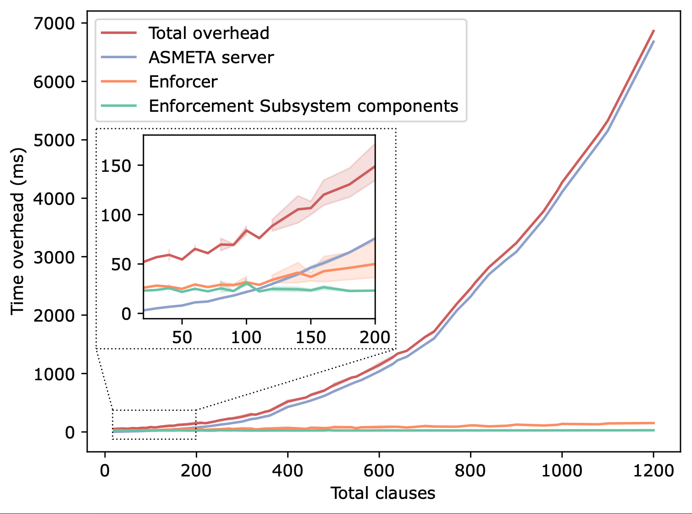
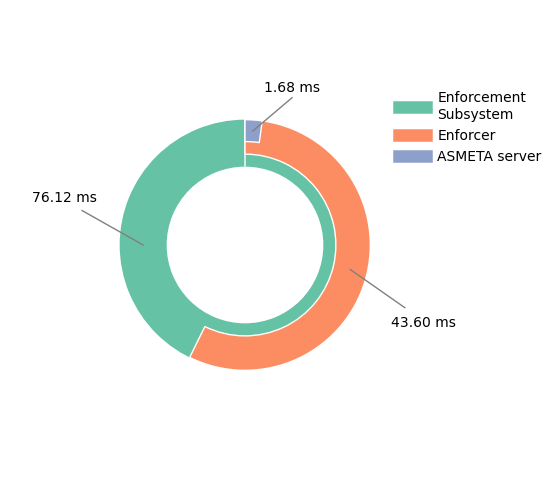
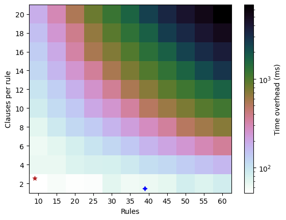

Replication Package
Runtime Enforcement for Operationalizing Ethics in Autonomous Systems
This page overviews the AssistiveCareRobot scenario, describes how to run the system and reproduce the experiments, and details qualitative analysis for the “Runtime Enforcement for Operationalizing Ethics in Autonomous Systems” paper submitted at IEEE Transactions on Software Engineering journal.
Overview
The replication package provides the full implementation of the SLEEC@run.time Enforcement Subsystem, the ARI simulation environment, experiment data and analysis scripts, as well as artifacts related to qualitative evaluation and proof-of-concept demonstrations.
- Scenario: assistive humanoid care robot scenario in a rehabilitation center and related SLEEC rules.
- Code: Enforcement Subsystem, ARI simulation, communication layer.
- Experiments: test cases, scalability tests, raw logs, and analysis notebooks.
- Proof-of-concept: videos of the scenario on the PAL ARI robot.
- Qualitative analysis: inputs and results of the interview-based study.
Scenario
As a reference scenario, we propose an assistive humanoid care robot deployed in a rehabilitation center to support patients diagnosed with diabetes. Patients are required to follow a strict diet and physical training program, and the scenario captures the complexity of this rehabilitation context, integrating exercise, nutrition, and coordination with healthcare staff.
The robot’s main mission is to assist patients in adhering to their prescribed routines by providing personalized guidance, continuously monitoring health-related data, and facilitating communication with medical personnel when necessary.
Robot Capabilities
- Continuous Data Monitoring. Each patient wears a smartwatch that monitors heart rate, activity levels, and glucose trends. The robot receives this data and adapts its behavior in real time, for example, adjusting exercise routines or alerting healthcare personnel in case of anomalies.
- Exercise Support. During training sessions, the robot uses camera-based motion recognition to monitor and count exercise repetitions. It provides real-time verbal feedback via text-to-speech and displays exercises on its integrated tablet.
- Interaction with Humans. The robot interacts with patients and rehabilitation staff (e.g., nurses, physicians) through voice recognition and speech synthesis. In risky or unexpected situations, it can autonomously request assistance and send notifications to ensure coordination.
- Dietary Guidance. At mealtimes, the robot reminds patients of their dietary plan and supports adherence to nutritional recommendations, ensuring meals are consumed according to prescribed medical guidelines.
- Patient Feedback Collection. During both training sessions and mealtimes, the robot gathers patient preferences and feedback through speech recognition or tablet-based interfaces, enabling controlled and structured interaction.
SLEEC Rules, Principles, and Labels
Description of Principles (“-” violated, “+” ensured).
P: Privacy, D: Dignity, B: Beneficence, NM: Non-Maleficence, A: Autonomy, ET:
Explainability & Transparency.
| Scope | ID | Rule Body | Principles | Labels |
|---|---|---|---|---|
| Start Training Time | S1 |
IF the user is ready THEN greet in the user's language AND start the session
UNLESS the user cares about privacy IN WHICH CASE greet in the user's language AND close the door AND start the session
UNLESS the room is too warm IN WHICH CASE ask for permission to keep the door open
UNLESS permission was not asked IN WHICH CASE do nothing
|
base:
+Bsupport physical activity
hc1:
+P keeping door closed,
+B support physical
activity,
+D respectful treatment
for user preferences
hc2:
+NMminimize harm by refreshing the room,
+P respect for user’s
privacy preferences,
+A ask permission to
keep door open
|
Social, Ethical, Empathetic, Cultural |
| S1a |
IF permission asked AND the user agrees to keep the door open THEN greet in the user's language AND start the session
|
base:
-P violate privacy in favour
of non-maleficence,
+B support activity,
+A respect consent,
+NM minimize harm by
refreshing the room.
|
Social, Ethical, Cultural | |
| S1b |
IF (permission asked AND the room is too warm AND the user does not agree to keep the door open)
THEN alert the nurse AND close the door
|
base:
+P respect for user’s privacy preferences,
+A respect for user choice,
-B physical activity is not
performed,
+NM training session does not
start as the room is too warm
and may be dangerous
|
Ethical | |
| Training Time | S2 |
IF the user is not exercising THEN show the next exercise AFTER 1 minute UNLESS the user did fewer repetitions than expected IN WHICH CASE encourage the user UNLESS the user has already been encouraged IN WHICH CASE get input via the graphical interface UNLESS the user has physical issues resulting from the exercises IN WHICH CASE notify user that the session is suspended AND alert the nurse |
base:
+Bsupport physical activity
hc1:
+Bmaximize outcomes with encouragement
hc2:
+A follow user instructions,
+D respectful treatment,
-B penalize outcome in
favour of dignity and
autonomy
hc3:
+D respectful treatment,
+NM minimize harm,
-B penalize outcome in
favour of non-maleficence,
+ET notify user
|
Ethical, Empathetic |
| S2a |
IF (the user is exercising AND complains about being tired) THEN encourage the user
UNLESS the user expressed the preference to exercise in silence IN WHICH CASE do nothing
|
base:
+B support physical activity
hc1:
+B support physical activity,
+A respect preferences
|
Empathetic | |
| Anytime | S3 |
IF a person asks for user training or medical data THEN share the data UNLESS (the user did not grant consent OR the person is unauthorized to access that data) IN WHICH CASE do not share data AND explain why |
base:
+Psafeguard privacy by following user’s
privacy consent (user),
+B support data sharing
for medical purposes (user/person)
hc1:
+P safeguard privacy
(user),
+ET explain why data
cannot be shared (person)
|
Legal, Ethical |
| S4 |
IF (the user asks for food AND it is not meal time) THEN explain why the user cannot eat at the moment
UNLESS the user has low glucose level IN WHICH CASE give dietary-approved snack AND inform the nurse
|
base:
+NMminimize harm by not giving food,
+ETexplain why the user
can not eat at the moment,
+Bmaximize dietary
objectives and compliance
-D imposition,
-A not granting autonomy
hc1:
+NM minimize the risk of
reaching hypoglycemia,
+A grant permission to the
user,
+D accommodating user’s
will
|
Ethical, Empathetic | |
| Mealtime | S5 |
IF user is not yet ready THEN remind the user to eat UNLESS the user is sleeping IN WHICH CASE gently wake up the user WITHIN 5 minutes OTHERWISE alert nurse UNLESS the user is in REM sleep IN WHICH CASE do not wake up the user AND inform nurse UNLESS the user is at risk of hypoglycemia IN WHICH CASE alert the nurse |
base:
+Bsupport dietary recommendations,
hc1:
+B support dietary
recommendation,
-D penalize dignity in favour of beneficience
hc2:
+D respectful treatment
of not waking up,
-B outcome not maximized
as user does not eat at the given time,
+NM minimize harm of not
waking up during the REM stage
hc3:
+NM minimize harm of
hypoglycemia
|
Social, Ethical |
| S6 |
IF the user is ready THEN deliver meal portions UNLESS the user wants to eat something outside the dietary plan IN WHICH CASE explain why the user should adhere to the diet AND deliver meal portions UNLESS (training results allow for a different food OR the user is particularly distressed) IN WHICH CASE deliver dietary-approved different food |
base:
+Bsupport dietary recommendations
hc1:
+NM minimize harm of not
following diet,
-A not granting autonomy,
-D imposition on what to
eat,
+ET explains why the user
should adhere to the diet
hc2:
+B still following dietary
recommendations,
+A grant permission to the
user,
+D user’s will is
accommodated,
+NM delivered food is
still approved by the diet
|
Ethical, Empathetic |
Build and Run
See the README in the repository for the full, detailed documentation.
The Enforcement Subsystem and ARI simulation can be deployed in different ways: via Docker Compose (recommended), in a local testing configuration, or by running components separately (for real-robot setups).
Repository Structure
At a high level, the repository is organized as follows:
sleec-at-runtime ├─ enforcement_subsystem/ # SLEEC@run.time Enforcement Subsystem │ ├─ asmeta_server/ # ASMETA simulation server │ ├─ enforcer/ # Enforcer component + ASM models │ ├─ ros2_ws/ # ROS 2 workspace (Monitor, Executor, Test Runner) │ └─ utils/ # ASM→Python conversion utilities │ ├─ ari_web_ws/ # ROS 2 workspace for ARI web interface ├─ experiments/ # Experiment data, test cases, and analysis │ ├─ results/ # Logs, CSVs, Jupyter notebooks │ ├─ scalability_test_cases/ # Generated models and tests for scalability │ └─ test_cases/ # Generated test cases used in the paper │ ├─ proof_of_concept/ # Video reports of the ARI scenario └─ qualitative analysis/ # Inputs and results of the qualitative analysis
1. Clone the repository
git clone <REPO_URL> cd sleec-at-runtime
2. Run the ARI simulation (Docker Compose, recommended)
Start the full SLEEC@run.time Enforcement Subsystem along with the ARI simulator:
cd enforcement_subsystem docker compose --profile ari-sim --env-file .env.docker-ari-sim up --build
Interact with the system
In a new terminal, run the ARI user interface:
docker exec -it sleec-runtime-enforcer-ari-sim-1 bash . install/setup.bash ros2 run ari_sim ari_sim_user_interface
3. Local (Docker) testing configuration
A lighter configuration for testing without the full ARI simulation.
cd enforcement_subsystem docker compose --profile ari-sim-test --env-file .env.docker-ari-sim up --build
Run tests on the reference scenario
In a new terminal:
docker exec -it sleec-runtime-enforcer-ari-sim-test-runner-1 bash cd reference_scenario
Generate a new test case if needed (optional):
python3 test_cases_generator.py <number_of_cases> <test_case_name>
Then run:
./run_reference_scenario_tests.sh <test_case_name>
Run scalability tests
In a new terminal:
docker exec -it sleec-runtime-enforcer-ari-sim-test-runner-1 bash cd scalability
Generate a new test case if needed (optional):
python3 scalability_test_cases_generator.py -r <#rules> -c <#conditions> -n <#test_cases>
Then run:
./run_scalability_tests.sh <#rules> <#conditions> docker
4. Run components separately
For real-robot deployments, components (ASMETA server, Enforcer, Monitor, Executor) can be run separately.
Enforcer + ASMETA server (Docker)
cd enforcement_subsystem docker compose --env-file .env.ros-deployment up --build
Monitor + Executor (ROS 2)
cd enforcement_subsystem pip install -r requirements.txt cd ros2_ws colcon build . install/setup.bash ros2 launch ari_sim_comm_layer ari_sim_comm_layer_launch.py \ rabbitmq_host:=<localhost/hostname/IP> rabbitmq_user:=robotuser rabbitmq_pass:=robotpass
Run the CLI simulator
. install/setup.bash ros2 launch ari_sim ari_sim_launch.py
Interact with the (simulated) system
. install/setup.bash ros2 run ari_sim ari_sim_user_interface
Experiments
The experiments folder contains the full dataset and analysis pipeline
used
to evaluate
SLEEC@run.time: test cases, scalability tests, raw logs, and Jupyter notebooks for
analysis.
Reproducing the experiments
-
Deploy Enforcer, ASMETA Server, and RabbitMQ:
cd sleec-at-runtime/enforcement_subsystem pip install -r requirements.txt docker compose --env-file .env.ros-deployment up --build
-
Deploy Monitor and Executor:
cd ros2_ws colcon build . install/setup.bash ros2 launch ari_sim_comm_layer ari_sim_comm_layer_launch.py \ rabbitmq_user:=robotuser rabbitmq_pass:=robotpass
-
Deploy the Test Runner: copy the ROS 2 workspace, test cases,
and
runner scripts
to the robot or device that will run the tests, or clone the repository there
and
copy from
experiments/. -
Run test campaigns:
- Functional test cases (e.g.,
ariec250,ariec500). - Scalability tests with generated rules and conditions.
- Functional test cases (e.g.,
-
Collect logs: copy ASMETA server logs, Enforcer logs, and Test
Runner logs into
the appropriate
raw_datafolders (functional vs scalability).
Analyzing results
The Jupyter notebooks in experiments/results/analysis/analysis.ipynb
and
experiments/results/scalability/analysis/scalability_analysis.ipynb
compute
correctness and overhead metrics from the collected logs.
extracted_asmeta_data.csv: ASMETA server runtime dataextracted_enforcer_data.csv: Enforcer runtime dataextracted_test_results.csv: aggregated test case resultstest_cases/ariec250.json,ariec500.json: test sets used in the paper
Metrics
From the collected logs, we computed: (i) the Enforcement Subsystem overhead, measured from contextual change simulation to obligation reception; (ii) the Enforcer overhead, including the analysis and planning phases; and (iii) the ASMETA server overhead, corresponding to the model execution step itself. We also checked whether the enforced obligation matched the expected ground truth for each test case.
Results
Effectiveness. Across all 750 test cases, the obligation enforced by the system was always consistent with the expected one. This shows that the SLEEC rules were correctly formalized as ASM transition rules and that the Enforcement Subsystem consistently drove the system back to the ethics-respectful region.
Overhead. The overall measured overhead was 76.1 ms on average (minimum 63 ms, maximum 104 ms, standard deviation 5.7). Of this, 43.6 ms came from the Enforcer and only 1.68 ms from the ASMETA server, showing that model execution itself contributes very little to the end-to-end overhead. Most enforced actions were received in less than 0.1 seconds (93 ms at the 99th percentile).
Scalability. The scalability analysis showed that the dominant source of growth is the ASMETA server, whose overhead increases approximately quadratically with the total number of clauses in the SLEEC ruleset. In contrast, the other components of the Enforcement Subsystem are only marginally affected by the ruleset size. For real-world-sized SLEEC rulesets, however, the overhead remains limited and practically manageable.
Scalability Overview

Overhead Breakdown

Scalability Results

Analysis artifacts
The notebooks in
experiments/results/analysis/analysis.ipynb and
experiments/results/scalability/analysis/scalability_analysis.ipynb
compute correctness and overhead metrics from the collected logs.
extracted_asmeta_data.csv: ASMETA server runtime dataextracted_enforcer_data.csv: Enforcer runtime dataextracted_test_results.csv: aggregated test case resultstest_cases/ariec250.json,ariec500.json: representative test sets
This section summarizes the quantitative evaluation reported in Section 8.2 of the paper. :contentReference[oaicite:7]{index=7}
Qualitative Analysis
To validate the SLEEC rules elicited for the assistive rehabilitation robot scenario, we conducted a qualitative study based on semi-structured interviews with domain experts. The validation process was guided by the following validation question:
Validation Question (VQ)
Do the elicited SLEEC ruleset, their connected principles, and associated SLEEC labels provide a clear, complete, correct, and value-aligned representation of ethical considerations with respect to the reference scenario?
Methodological Approach
We followed the Qualitative Survey Empirical Standards (ACM SIGSOFT) for conducting semi-structured interviews. The study aimed to gather expert feedback on the expressiveness, coherence, and practical adequacy of the SLEEC ruleset in relation to the rehabilitation scenario.
Participants were recruited using convenience sampling, a non-probability sampling method commonly adopted in qualitative research. Experts were selected based on their availability and prior collaboration with the research team, as well as their demonstrated expertise in software engineering, formal methods, AI ethics, and SLEEC-based systems.
We interviewed four domain experts. Each interview was conducted synchronously in a one-on-one setting by two authors of the study. Interviews were structured around a predefined protocol and lasted between 60 and 90 minutes.
Interview Procedure
- A brief introductory presentation outlined the study objectives, the rehabilitation scenario, and the SLEEC rules.
- Experts were presented with the elicited SLEEC ruleset, associated principles, and SLEEC labels.
- Open-ended questions explored clarity, completeness, correctness, alignment with ethical values, and potential ambiguities or missing aspects.
- All interviews were audio-recorded and transcribed.
Data Analysis
We applied qualitative data analysis focusing on the relevance, expressiveness, and coherence of expert responses. Feedback was analyzed iteratively and discussed among all authors.
Suggested modifications to the SLEEC ruleset were incorporated after collective agreement and after addressing concerns related to clarity, practical applicability, and ethical consistency. The final validated SLEEC ruleset was then used in the implementation and is available in the Scenario section .
Expert Profiles
[ID1] PhD in Artificial Intelligence; assistant professor in computer science. Research in logic-based AI, multi-agent systems, ontologies, social choice, and formal philosophy.
[ID2] PhD candidate in Computer Science. Background in data science and software engineering, focusing on testing and verification of ethical-aware autonomous systems.
[ID3] PhD in Computer Science; faculty member. Expertise in formal verification, temporal logic, safety-critical systems, and development of practical verification tools.
[ID4] PhD in Information and Communication Technology; assistant professor. Research in privacy-enhancing technologies, empirical software engineering, and human-centered ethical system design.
Proof of Concept
Running SLEEC rule:
SCOPE Training Time
RULE S2
IF The user is not exercising THEN Show the next exercise AFTER 1 minute
UNLESS The user did fewer exercise repetitions than expected IN WHICH CASE Encourage the user
UNLESS The user has already been encouraged IN WHICH CASE Get input from the user through a graphical interface
UNLESS The user has physical issues resulting from the exercises IN WHICH CASE (Notify the user that the session is suspended AND Alert the nurse)